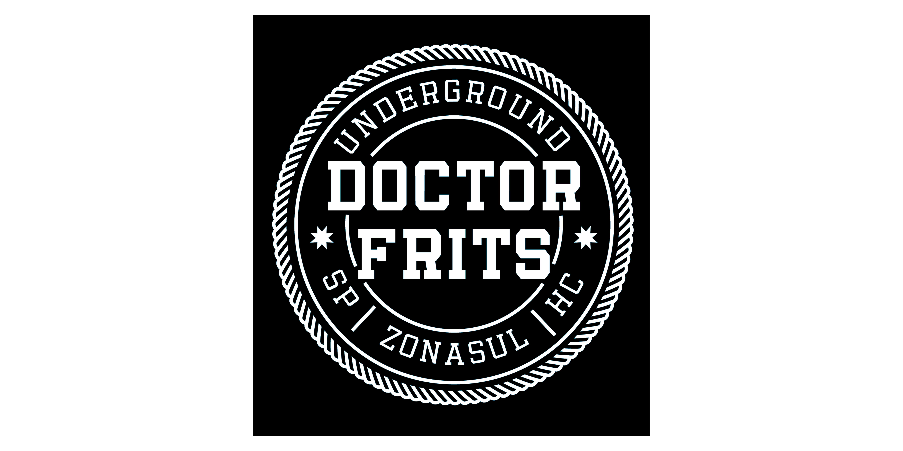

Banda doctor frits
Doctor Frits é um duo independente de post-hardcore da Zona Sul de São Paulo. Formada por volta de 2015 pelos irmãos Daniel Rosa (guitarra e vocal) e Higor Rosa (bateria e vocal), a banda explora temas intensos, transitando entre conflitos internos, questionamentos sociais e a dualidade da existência. Atuante na cena underground, o Doctor Frits se destaca pela presença em eventos nas periferias, coletivos culturais e ações solidárias, fortalecendo o cenário independente com energia e compromisso.



Desenvolvimento:
 Projeto gráfico
Projeto gráfico
 Ilustração
Ilustração
 Diagramação
Diagramação
 Redesign
Redesign
 Criação
Criação